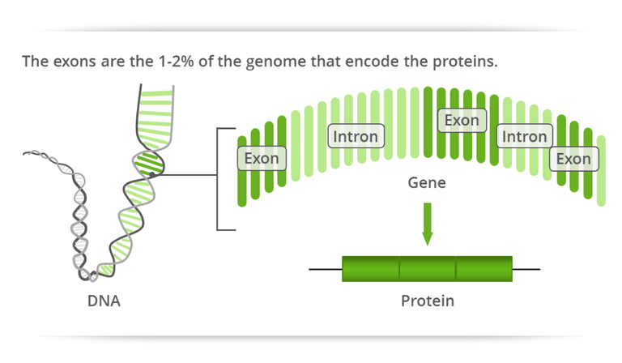

Examples - Gene: PCSK9
The exome consists of the 1-2% of base pairs in the genome that encodes proteins. By studying the exome, we hope to discover the base pair sequences in genes that cause rare neurodegenerative disorders such as Hereditary Spastic Paraplegia.
The exome is made of sequences of base pairs called exons, while the rest of the genome is made up of sequences of base pairs called introns. Together, groups of exons and introns form genes.
